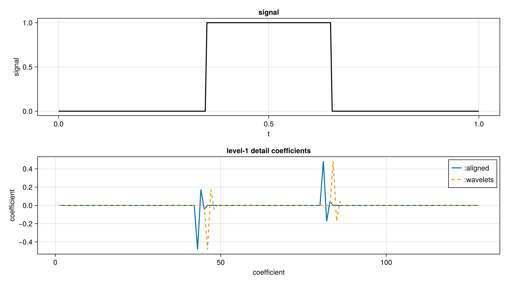
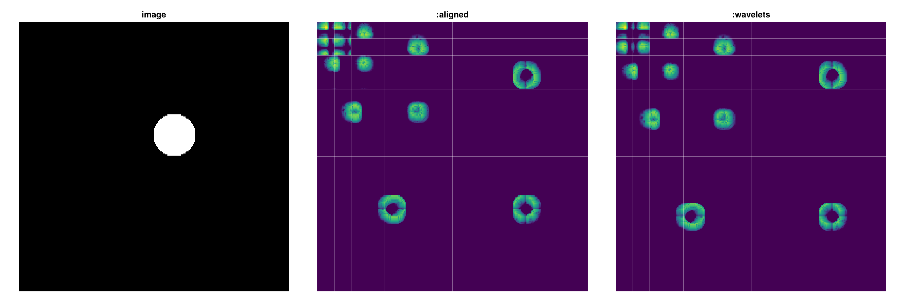
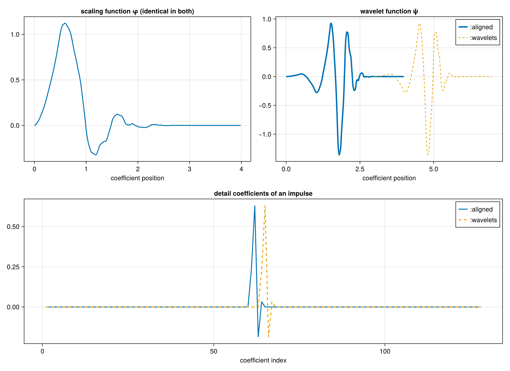

Phase conventions
There are two phase conventions in the wavelets literature. The scaling coefficients are the same in both conventions. Detail coefficients differ by a cyclic rotation. Both yield perfect reconstruction.
Every transform takes a convention keyword:
:aligned(default) applies scaling and wavelet filters to the same input window. This matches PyWavelets and MATLAB-style implementations.:waveletsreproduces the coefficient layout of Wavelets.jl. The ψ window startsntaps - 2taps before the φ window, so each detail band is the aligned one rotated by(ntaps - 2) / 2.
convention is dispatched at compile time, so neither choice costs anything at run time.
x = rand(1024)
a = dwt(x, WT_D4, 3; convention = :aligned) # default
b = dwt(x, WT_D4, 3; convention = :wavelets) # matches Wavelets.jl
idwt!(a, WT_D4, 3; convention = :aligned) # round tripsExample: 1-D transform

Example: 1-D transform
We take a four-level WT_D8 transform. The first panel is the image. The middle and right panels are the same coefficients under the two conventions, with the subband boundaries drawn. The detail bands are displaced; displacement grows with depth.

Basis view of the phase convention
To illustrate the effect of phase, cascade is run with detail coefficients shifted by (ntaps - 2) / 2 indices relative to the approximation coefficient.
